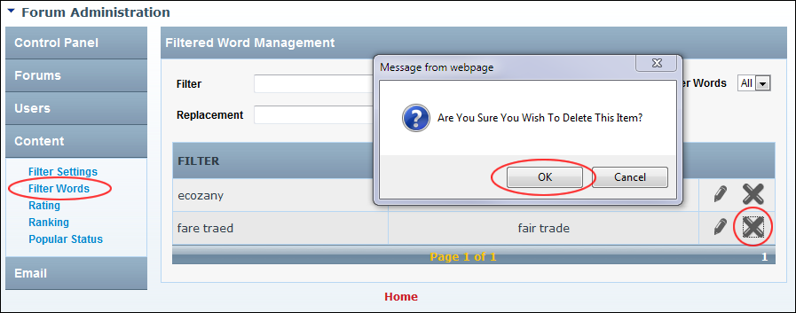

Deleting a Filtered Word
How to delete a filtered word from the Forum module.
- Go to the Forum Administration page. See "Navigating to the Forum Admin Page"
- In the left-hand panel, select Content > Filter Words. This displays the Filtered Word Management window.
- In the Filter column, locate the word to be deleted. See "Filtering Filter Words"
- Click the Delete
 button. This displays the message "Are You Sure You Wish To Delete This Item?"
button. This displays the message "Are You Sure You Wish To Delete This Item?"
-

Deleting a Filtered Word